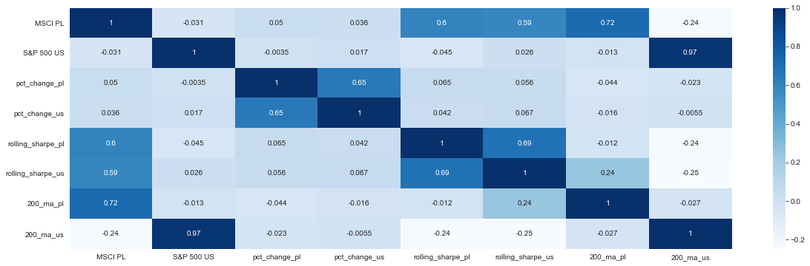

This is a Python data visualization project created with Pandas and Seaborn. It downloads historical prices from Yahoo Finance API and uses various technical analysis tools.
The S&P 500 Index, or the Standard & Poor's 500 Index, is a market-capitalization-weighted index of the 500 largest publicly-traded companies in the U.S. It is not an exact list of the top 500 U.S. companies by market capitalization because there are other criteria to be included in the index. The index is widely regarded as the best gauge of large-cap U.S. equities. The market capitalization of a company is calculated by taking the current stock price and multiplying it by the outstanding shares. The S&P only uses free-floating shares, meaning the shares that the public can trade. The S&P adjusts each company's market cap to compensate for new share issues or company mergers. The value of the index is calculated by totaling the adjusted market caps of each company and dividing the result by a divisor. The S&P 500 is one of the most widely quoted American indexes because it represents the largest publicly traded corporations in the U.S. The S&P 500 focuses on the U.S. market's large-cap sector and is also a float-weighted index, meaning company market capitalizations are adjusted by the number of shares available for public trading.
MSCI is an acronym for Morgan Stanley Capital International. It is an investment research firm that provides stock indexes, portfolio risk and performance analytics, and governance tools to institutional investors and hedge funds. MSCI is perhaps best known for its benchmark indexes—including the MSCI Emerging Market Index and MSCI Frontier Markets Index—which are managed by MSCI Barra. The company continues to launch new indexes each year. The MSCI indexes are market cap-weighted indexes, which means stocks are weighted according to their market capitalization—calculated as stock price multiplied by the total number of shares outstanding. The stock with the largest market capitalization gets the highest weighting on the index. This reflects the fact that large-cap companies have a bigger impact on an economy than mid- or small-cap companies. A percent change in the price of the large-cap stocks in an MSCI index will lead to a bigger movement in the index than a change in the price of a small-cap company. Each index in the MSCI family is reviewed quarterly and rebalanced twice a year. Stocks are added or removed from an index by analysts within MSCI to ensure that the index still acts as an effective equity benchmark for the market it represents. When an MSCI index is rebalanced, ETFs and mutual funds must also adjust their fund holdings since they are created to mirror the performance of the indexes.

| Code | Technologies |
|---|---|
 |    |